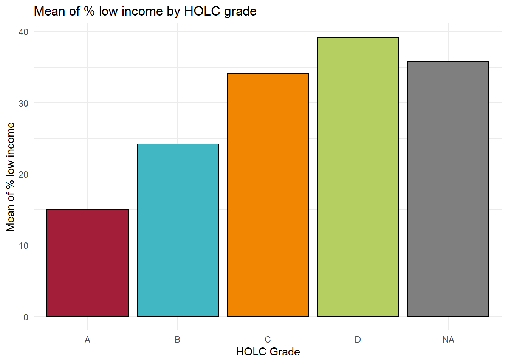

library(sf)
library(here)
library(tmap)
library(paletteer)
library(tidyverse)Historical Redlined Neighborhoods in LA County
Exploring patterns of environmental justice
Load libraries
Part 1: Legacy of redlining in current environmental (in)justice
Read in data
ejscreen <- read_sf(here("data", "ejscreen", "EJSCREEN_2023_BG_StatePct_with_AS_CNMI_GU_VI.gdb"))
holc <- read_sf(here("data", "mapping-inequality", "mapping-inequality-los-angeles.json"))
bird <- read_sf(here("data", "gbif-birds-LA", "gbif-birds-LA.shp"))Filter data to LA county
# Filter to California
# Use of ID! and st_make_valid() to filter out unwanted coastline of LA county
california <- ejscreen %>%
dplyr::filter(ST_ABBREV=="CA" &
ID!='060379903000' &
ID!='060379902000' &
ID!='060599901000') %>%
st_make_valid()
# Filter to Los Angeles County
# Use of ID! and st_make_valid() to filter out unwanted coastline of LA county
la <- ejscreen %>%
dplyr::filter(CNTY_NAME == "Los Angeles County" &
ID!='060379903000' &
ID!='060379902000' &
ID!='060599901000') %>%
st_make_valid()Map of historically redlined neighborhoods
Show the code
tm_shape(california, bbox = holc) +
tm_fill(col = "slategrey") +
tm_borders(col = "lightgrey",
alpha = 0.5) +
tm_shape(la, bbox = holc) +
tm_borders() +
tm_shape(la) +
tm_polygons(col = "#D2B48C") +
tm_shape(holc) +
tm_polygons(col = "grade",
palette = c("#A21E39", "#41B7C4", "#F08602", "#B5CF60")) +
tm_layout(main.title = "Map of Historical Redlininig Neighborhoods in LA County",
main.title.position = "left",
main.title.size = 1,
legend.position = c(0.0, 0.0),
bg.color = "lightblue") +
tm_scale_bar(position = c(0.55, 0.925)) +
tm_compass(position = c(0.90, 0.85))Table summary of census block groups
We want to create a table summary of percent of current census block groups within each HOLC grade (or none). To do this, we first need to test whether or not our HOLC data and la county data have the same coordinate reference system.
# Test to see if crs's are the same or not
if (st_crs(holc) != st_crs(la)) {
warning("Coordinate reference systems are not the same!")
} else {
print("Coordinate systems match!")
}Warning: Coordinate reference systems are not the same!# Set the same crs of holc and la to join data
holc <- st_transform(holc, crs = st_crs(la))
# Retest to see if the crs's are the same or not
if (st_crs(holc) != st_crs(la)) {
warning("Coordinate reference systems are not the same!")
} else {
print("Coordinate systems match!")
}[1] "Coordinate systems match!"Show the code
# Join HOLC and LA data, filter to percent grade
census_percent <- st_join(x = holc, y = la, join = st_intersects) %>%
group_by(grade) %>%
summarise(percent = round(n() / nrow(la) * 100,
digits = 2)) %>%
select(grade, percent) %>%
st_drop_geometry()
# Test to make sure we get two columns
testthat::expect_length(census_percent, 2)
# Create a kable table
kableExtra::kable(census_percent,
col.names = c("Grade", "Percent"),
align = "c",
caption = "The percentage of HOLC grades in La county")| Grade | Percent |
|---|---|
| A | 6.81 |
| B | 18.80 |
| C | 46.41 |
| D | 20.43 |
| NA | 4.49 |
Table summary of % low income, PM percentile, and life expectancy percentile
We want to create figures that summarize current conditions within HOLC grades using the means of % low income, percentile for particulate matter 2.5, and percentile for low life expectancy
Show the code
# Join HOLC and LA data create a new table
holc_la <- st_join(x = holc, y = la, join = st_intersects)
# Create table of mean % low income, particulate matter, and life expectancy
holc_la_filter <- holc_la %>%
group_by(grade) %>%
summarize(mean_income = round(mean(LOWINCPCT) * 100,
digits = 2),
mean_pm = round(mean(P_PM25),
digits = 2),
mean_life = round(mean(P_LIFEEXPPCT, na.rm = TRUE),
digits = 2)) %>%
st_drop_geometry()
kableExtra::kable(holc_la_filter,
col.names = c("Grade","Mean % Low Income", "Mean Percentile PM", "Mean Percentile Low Life Expectancy"),
caption = "The mean of % low income, percentile PM, and percentile low life expectancy of HOLC grades in La county")| Grade | Mean % Low Income | Mean Percentile PM | Mean Percentile Low Life Expectancy |
|---|---|---|---|
| A | 14.98 | 72.16 | 23.76 |
| B | 24.20 | 76.34 | 37.42 |
| C | 34.09 | 78.82 | 47.88 |
| D | 39.19 | 80.24 | 53.04 |
| NA | 35.82 | 76.73 | 50.12 |
Create plots describing the means of the table above
Show the code
# Pivot data to create a bar plot of percentile of particulate matter and
# percentile of life expectancy
# Filter to mean_pm and mean_life to compare these percentiles on a bar plot
holc_la_pivot <- holc_la_filter %>%
pivot_longer(cols = c(mean_income, mean_pm, mean_life),
names_to = "type",
values_to = "means") %>%
filter(type == "mean_pm" | type == "mean_life")
# Plot percentile of particulate matter and percentile of life expectancy as a bar plot
ggplot(holc_la_pivot) +
geom_col(aes(x = grade,
y = means,
fill = type),
position = "dodge",
color = "black") +
labs(x = "HOLC grade",
y = "Mean percentile",
title = "Mean percentile of PM 2.5 and low life expectancy for each HOLC grade") +
scale_fill_manual("Mean Type",
values = c("coral", "lightblue"),
labels = c("Low Life Expectancy", "Particulate Matter 2.5")) +
theme_minimal()Show the code
# Plot Mean % of low income by HOLC grade
ggplot(holc_la_filter) +
geom_col(aes(x = grade,
y = mean_income,
fill = grade),
color = "black",
show.legend = FALSE) +
scale_fill_manual(values = c("#A21E39", "#41B7C4", "#F08602", "#B5CF60", "grey")) +
labs(x = "HOLC Grade",
y = "Mean of % low income",
title = "Mean of % low income by HOLC grade") +
theme_minimal()
The two bar plots were created because of the difference in units of the variables being compared. Life expectancy and particulate matter 2.5 are percentiles. This is why they were bundled together in the same bar plot. On the other hand, the percent of low income is measured as a percentage. It would not make sense to have all three of these values on the same bar plot as their units do not match.
The percentile of low life expectancy and particulate matter increase from HOLC grades A to D. We may suspect that these would increase because of the socioeconomic differences among “lower” grades C and D. On the other hand, we see an increase in mean of % low income as we go from HOLC grades A to D. We expect to see this as move to “lower” grades C and D.
Part 2: Legacy of redlining in biodiversity observations
The goal in this section is to create a figure summarizing the percent of bird observations within redlined neighborhoods within each HOLC grade. To do this we must first join our holc and bird observation data. This can be done through the following code.
# Test to see if crs's are the same for holc and bird data
if (st_crs(holc) != st_crs(bird)) {
warning("Coordinate reference systems are not the same!")
} else {
print("Coordinate systems match!")
}Warning: Coordinate reference systems are not the same!# Set the same crs of birds and la to join data
bird <- st_transform(bird, crs = st_crs(holc))
# Retest to see if the crs's are the same
if (st_crs(holc) != st_crs(bird)) {
warning("Coordinate reference systems are not the same!")
} else {
print("Coordinate systems match!")
}[1] "Coordinate systems match!"# Join bird data onto holc
bird_la <- st_join(x = holc, y = bird, join = st_intersects, left = TRUE)
# Test to make sure we get 16 columns
testthat::expect_length(bird_la, 16)Show the code
# Filter data to year 2022, find the percentage of bird observations
# in LA county among different HOLC grades
birds_la_holc <- bird_la %>%
filter(year == 2022) %>%
group_by(grade) %>%
summarise(count = n()) %>%
mutate(bird_grade = round(count / sum(count)*100,
digits = 2)) %>%
select(grade, bird_grade) %>%
st_drop_geometry()
# Create a table using this filtered data
kableExtra::kable(birds_la_holc,
col.names = c("HOLC Grade", "Bird Observation Percentage"),
align = "c")| HOLC Grade | Bird Observation Percentage |
|---|---|
| A | 15.07 |
| B | 18.67 |
| C | 34.27 |
| D | 28.15 |
| NA | 3.84 |
Show the code
ggplot(birds_la_holc,aes(x = grade,
y = bird_grade,
fill = grade)) +
geom_col(color = "black",
show.legend = FALSE) +
scale_fill_manual(values = c("#A21E39", "#41B7C4", "#F08602", "#B5CF60", "grey")) +
labs(x = "HOLC Grade",
y = "Bird Observation Percentage",
title = "Percentage of bird observation in HOLC grades in LA County") +
theme_minimal() The findings in the paper by Ellis-Soto et al. 2023 is different from ours. In their analysis, they see a decrease in observations of birds from HOLC grade A to D. Our data shows that there is an increase in bird observations within HOLC grades C and D. The reason why we see this is because HOLC grades C and D cover a higher area than A and B. If you refer to the first table, you will see that A and B cover 6.81% and 18.80% respectively, while C and D cover 46.41% and 20.43% respectively. If the amount of area where observations was the same, then we would expect to see more observations in A and B.
Citations
Show the code
tribble(
~Data, ~Citation, ~Link,
"Global Biodiversity Information Facility", "GBIF.org (13 October 2024) GBIF Occurence Download", "[Species API](https://techdocs.gbif.org/en/openapi/v1/species)",
"HOLC Redlining Data", "Nelson, R. K., Winling, L, et al. (2023). Mapping Inequality: Redlining in New Deal America. Digital Scholarship Lab. https://dsl.richmond.edu/panorama/redlining.", "[Mapping Inequality](https://dsl.richmond.edu/panorama/redlining/data)",
"EJScreen: Environmental Justice Screening and Mapping Tool", "United States Environmental Protection Agency. 2024 version. EJScreen. Retrieved: 10/4/24 from www.epa.gov/ejscreen", "[EJScreen Data](https://www.epa.gov/ejscreen/download-ejscreen-data)"
) %>%
kableExtra::kable()| Data | Citation | Link |
|---|---|---|
| Global Biodiversity Information Facility | GBIF.org (13 October 2024) GBIF Occurence Download | Species API |
| HOLC Redlining Data | Nelson, R. K., Winling, L, et al. (2023). Mapping Inequality: Redlining in New Deal America. Digital Scholarship Lab. https://dsl.richmond.edu/panorama/redlining. | Mapping Inequality |
| EJScreen: Environmental Justice Screening and Mapping Tool | United States Environmental Protection Agency. 2024 version. EJScreen. Retrieved: 10/4/24 from www.epa.gov/ejscreen | EJScreen Data |